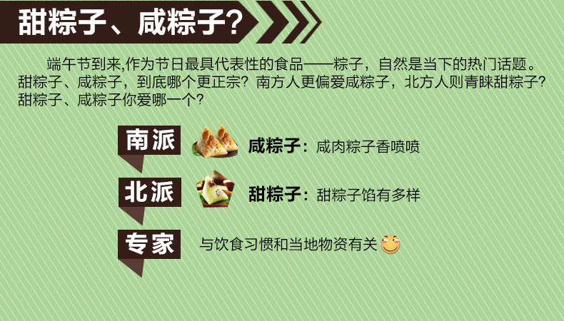

端午节，为每年农历五月初五。据《荆楚岁时记》记载，因仲夏登高，顺阳在上，五月是仲夏，它的第一个午日正是登高顺阳好天气之日，故五月初五亦称为“端阳节”。此外端午节还称“午日节、五月节、龙舟节、浴兰节、诗人节”等。端午节是流行于中国以及汉字文化圈诸国的传统文化节日。
据统计，端午节的名称叫法达二十多个，如有端五节、端阳节、重五节、重午节、当五汛、天中节、夏节、五月节、菖节、蒲节、龙舟节、浴兰节、屈原日、午日节、女儿节、地腊节、诗人节、龙日、午日、灯节、五蛋节等等。
其内容主要有："女儿回娘家，挂钟馗像，迎鬼船、躲午，帖午叶符，悬挂菖蒲、艾草，游百病，佩香囊，备牲醴，赛龙舟，放风筝，比武，击球，荡秋千，给小孩洗苦草麦药澡，涂雄黄，饮用雄黄酒、菖蒲酒，吃五毒饼、咸蛋、粽子和时令鲜果等。"

粽子的由来
屈原投江后，当地百姓闻讯马上划船捞救，一直行至洞庭湖，始终不见屈原的尸体。为了寄托哀思，人们荡舟江河之上，此后才逐渐发展成为龙舟竞赛。百姓们又怕江河里的鱼吃掉他的身体，就纷纷回家拿来米团投入江中，以免鱼虾糟蹋屈原的尸体，后来就成了吃粽子的习俗。
清明插柳，端午插艾。
癞蛤蟆躲不过五月五。
端午不戴艾，死去变妖怪 。
午时水饮一嘴,较好补药吃三年。
喝了雄黄酒，百病远远丢。
有钱难买五月五日旱。
未吃端午粽，寒衣不可送；吃了端午粽，还要冻三冻。
端午节，天气热；五毒醒，不安宁。
山西省解州端午，男女戴艾叶，称为“去疾”，幼童则系百索于脖子上，据说这是“为屈原缚蛟龙”。隰州端午，各村祭龙王，并在田间挂纸。怀仁县端午又名“朱门”。定襄县端午，学生需致赠节礼给教师。潞安府以麦面蒸团，称为“白团”，与粽子一起拿来互相馈赠。
在韩国，端午节用于祭祀祖先、祈求丰年、保佑身体平安。端午节期间韩国人多喜食艾草饼、品樱桃茶、喝醍醐汤。食艾草糕。
粽子在日本古代称为“茅卷”，呈圆锥形。最初是将粳米蒸熟捣碎成年糕状后用茅叶包裹，再如水煮熟。后来改用菖蒲叶、竹叶、芦苇叶等包裹，制作方法也逐渐多样化。